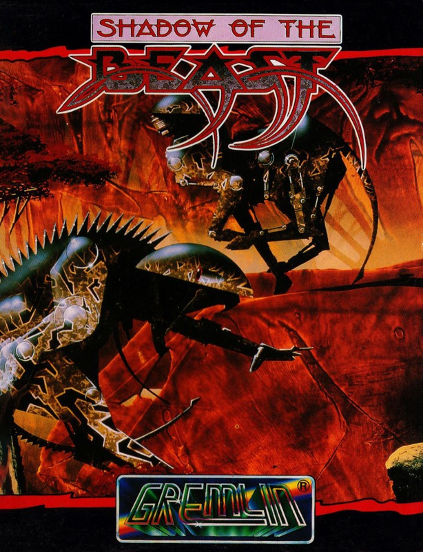
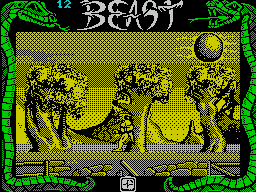

Shadow of the Beast


{kind=link}

| Publisher: | Gremlin |
| Price: | £12.99 / £15.99 |
| Year: | 1990 |
| Source: | CRASH, Issue 83 |

For many years the evil Beast Lord has been creating strange creatures to guard his stronghold, and one such creation is after revenge. The hero of Shadow of the Beast was once human, but was taken when still a child to the Beast Mages and transformed. Now adult, the creature remembers his human past and is determined to reclaim his true form: to do this he must enter the Beast Lord’s stronghold and destroy him.
Before the final showdown you must travel through the wild and dangerous lands that border the Beast Lord’s domain. Evil-minded creatures are out to stop you reaching their master. Your defence are your fists and your feet, but, as you travel along, items present themselves for collection: keys (to open locked doors), potions (different effects) and weapons. With every hit you take from the enemy your heart rate rises. If it beats too fast it explodes (not a very nice death).

Apart from the horizontally scrolling outdoor scenes, there are several indoor scenes which play like a platform game. It isn’t difficult to spot entrances as the doorways are marked with a large arrow bearing the word Enter!
Shadow of the Beast is a classic piece of Amiga game and one nobody thought would, or could, be converted to the Speccy. I doubted whether the Speccy version would retain the action of the 16-bit original. How wrong I was! Shadow of the Beast has all the playability of the original and the graphics, both the animated characters and the scenery, are wonderfully drawn and move well. But it can be difficult to spot an enemy attacker due to the mono background. Gremlin have done a first rate job in converting it: it’s a wonderful arcade adventure and a well deserved Smash.
MARK — 92%
I was flabbergasted by the graphics of Shadow of the Beast on 16-bit and was prepared for the 8-bit version to be quite disappointing. But this game is pure excellence! Not only have Gremlin managed to keep the looks and feel of the original but it’s playable and addictive too! From the minute I started playing I was hooked: each section is packed with well-drawn backgrounds, the characters have plenty of smooth animation and there’s some neat toe-tapping music, though it can’t be turned off!. The monochrome display didn’t spoil my enjoyment, but the monsters get hidden in the backgrounds: it’s hard to prepare a punch when you can’t see what you’re punching! The game’s a bit pricey, but, on the whole, worth it. I’ll be playing late into the night!
NICK — 93%
RATING
A remarkable conversion of a 16-bit classic: a winner!
| Presentation: | 90% |
| Graphics: | 91% |
| Sound: | 90% |
| Playability: | 90% |
| Addictivity: | 89% |
| Overall: | 92% |